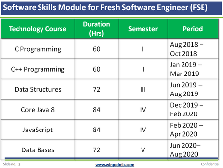
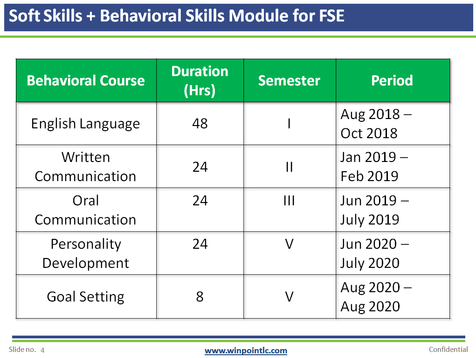

Institute - Technology Institute (IT Stream) - Integrated Skills Development (ISD) Program
This program is designed for the Technology Institutes (IT stream) which are looking for a strategic approach to develop Software Skills and Behavioral Skills of their students. The long term learning intervention used in this program would help students develop strong profile by the time they get ready to appear in the Campus Recruitment Process of IT companies. The road-map for this program provides direction to the Technology Institutes (IT Stream) about the optimum timing and order for completing different training programs so that their students can make most out of them and meet their final objective of starting a career with their dream IT company.
This program is devided into two parts-
PART I - Integrated Software Skills:

PART II - Integrated Behavioral Skills:
